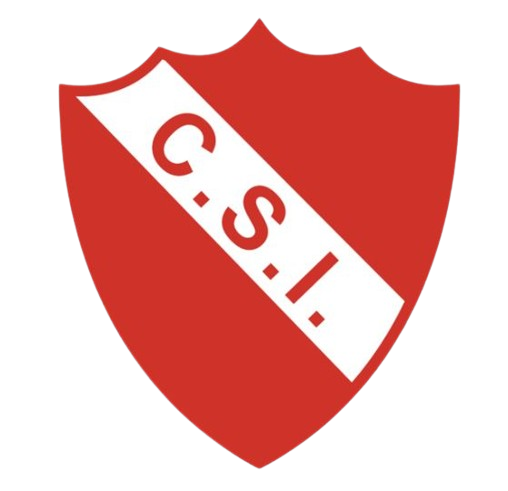

HISTORIA

El Club Sportivo Independiente fue fundado el 20 de agosto de 1920 en la ciudad de General Pico, La Pampa, por el maestro Roberto Petit de Meurville. La idea de crear la institución surgió a partir de un grupo de alumnos de la Escuela N.º 66, quienes junto con su docente buscaban contar con un espacio para practicar deportes y, al mismo tiempo, complementar la educación recibida en la escuela.
Desde sus comienzos, el club tuvo una fuerte relación entre el deporte y la educación. La intención de sus fundadores era alejar a los jóvenes de los malos hábitos y promover una vida saludable a través de la actividad física. Esta filosofía quedó representada en el lema “Mens sana in corpore sano”, que significa “mente sana en cuerpo sano” y continúa formando parte de la identidad de la institución.
Los primeros entrenamientos de fútbol, tenis y atletismo se realizaron en terrenos ubicados sobre la calle 21, junto a las vías del ferrocarril. Durante sus primeros años, la institución fue creciendo hasta que en 1931 una asamblea autorizó la compra de los terrenos ubicados sobre la Avenida San Martín, donde posteriormente se desarrollaría gran parte de la actividad deportiva y social del club.
El fútbol tuvo un papel fundamental durante los primeros años de Independiente. El club participó desde los comienzos de la organización del fútbol pampeano y fue uno de los clubes fundadores de la Liga Pampeana de Fútbol en 1926. Su primer campeonato de Primera División llegó en 1928, iniciando una extensa trayectoria dentro del fútbol regional.
Durante las décadas siguientes, Sportivo Independiente continuó siendo uno de los principales protagonistas de la Liga Pampeana. Consiguió nuevos campeonatos en 1931, 1933, 1934, 1935, 1938, 1943, 1944, 1950 y 1951, entre otros títulos. Estos logros ayudaron a consolidar al club como una de las instituciones deportivas más importantes del norte de La Pampa.
Además del fútbol, Independiente fue incorporando y desarrollando diferentes disciplinas deportivas. Con el paso de los años, el club se destacó especialmente en deportes como básquet, tenis, atletismo, hockey, gimnasia artística, cesto y otras actividades, convirtiéndose en una institución deportiva de gran importancia para General Pico.

Uno de los mayores logros deportivos de la institución llegó en la década de 1990 con el básquet. El equipo de Independiente tuvo una destacada participación en la Liga Nacional de Básquet y logró consagrarse campeón de la temporada 1994-1995. Este título significó uno de los momentos más importantes de la historia deportiva del club y puso a General Pico en lo más alto del básquet argentino.
Al año siguiente, en 1996, Independiente volvió a destacarse a nivel internacional al conquistar el Campeonato Sudamericano de Clubes de Básquet. De esta manera, la institución logró sumar un título continental a su historia y reafirmó su importancia dentro del deporte argentino.
La figura de Roberto Petit de Meurville ocupa un lugar central en la historia del club. Su visión de combinar educación y deporte marcó profundamente la identidad de Independiente y fue transmitida a las generaciones posteriores. El fundador falleció el 20 de agosto de 1970, exactamente cincuenta años después de la creación de la institución, en una fecha que quedó especialmente ligada a la historia del club.
Actualmente, el Club Sportivo Independiente continúa desarrollando numerosas actividades deportivas y sociales. Cuenta con más de diez disciplinas y diferentes espacios destinados a la práctica deportiva, entre ellos canchas de tenis, hockey, fútbol 5, gimnasia y básquet, además de su sede social y otros predios deportivos.
Con más de un siglo de historia, el Club Sportivo Independiente se mantiene como una de las instituciones deportivas más representativas de General Pico y de la provincia de La Pampa. Su trayectoria combina logros deportivos, formación de jóvenes, educación en valores y un fuerte sentido de pertenencia por parte de sus socios, deportistas y familias.